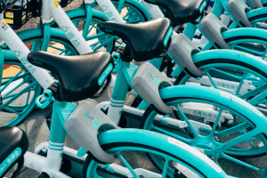
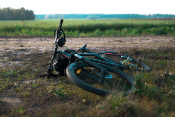

-
Round-Island Cycling
Route 1 circles the island on a combination of marked public roads and cycling paths. Rest and repair stations abound, and campsites are available along the way!
-
Local Routes
Taiwan's major cities have a variety of scenic cycling routes. Downtown bikelanes, riverside paths, and old railroad tunnels and bridges add life to your ride!
-

Need wheels?
Rentals are available at individual bike shops around the island, including luggage-equipped touring bikes on the scenic east coast.
-

Need gear?
If you left something at home or lost something along the way, Taiwan is home to some of the world's largest cycling brands. No matter what you need, it's here.